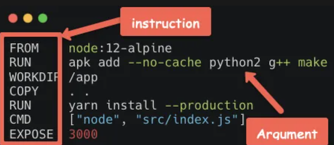
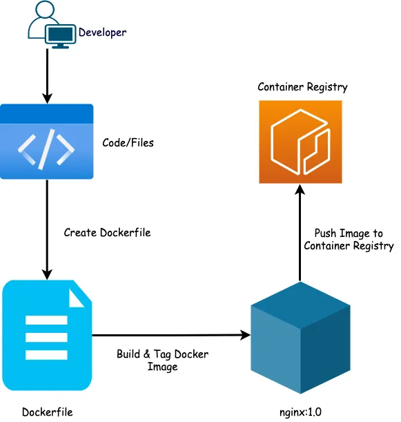
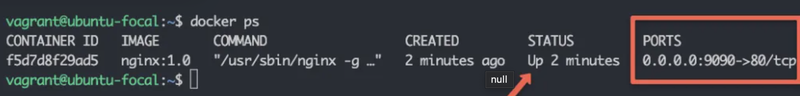
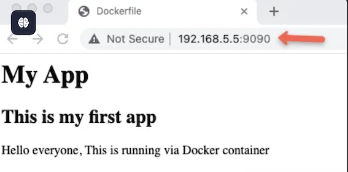
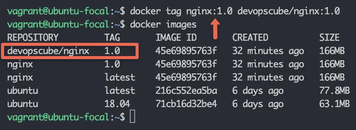
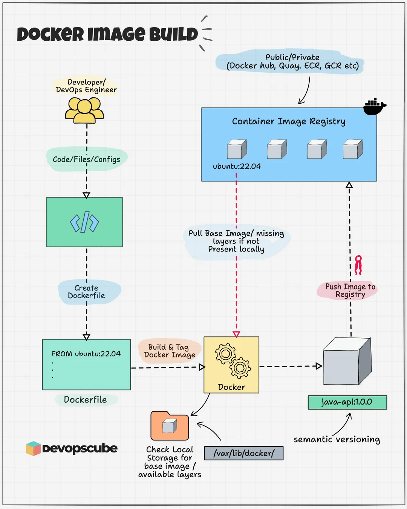
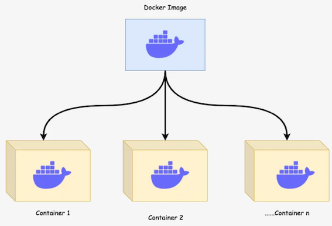

2 Docker面试10大必考题
1. 什么是 Docker？它与虚拟机（VM）有何区别？
Docker： 轻量级容器化平台，基于操作系统级虚拟化，共享宿主内核，启动快、资源占用低。
区别：
-
资源占用：
- Docker 容器共享宿主机内核，
- VM 需要独立内核和完整操作系统。
-
启动速度：
- 容器秒级启动，
- VM 分钟级启动。
- 隔离性
- VM 提供更强的隔离性，
- 容器通过命名空间和 Cgroups 实现轻量隔离。
2. 解释 Docker 镜像、容器和仓库的作用。
- 镜像（Image）： 只读模板，包含运行应用所需的代码、库和环境。
- 容器（Container）： 镜像的运行实例，具有可写层，生命周期独立。
- 仓库（Registry）： 存储和分发镜像的平台（如 Docker Hub、私有仓库）
3. 如何从 Docker 镜像启动一个容器？
docker run -d --name my_container -p 8080:80 nginx:alpine
-d： 后台运行--name： 指定容器名称-p： 端口映射（宿主机端口:容器端口）
4. 什么是 Docker 的多阶段构建（Multi-stage Builds）？
多阶段构建是 Dockerfile 的一种优化技巧，可以减少镜像的大小。
在多阶段构建中，多个 FROM 语句用于在不同阶段构建镜像。
你可以在前一个阶段中执行复杂的构建和安装操作，而在后一个阶段中只复制所需的文件到最终的镜像中。
第一阶段：构建应用
FROM golang:1.16 AS builder
WORKDIR /app
COPY . .
RUN go build -o myapp
第二阶段：运行应用
FROM alpine:latest
WORKDIR /root/
COPY --from=builder /app/myapp .
CMD ["./myapp"]
在此示例中，第一阶段使用了 golang 镜像来编译 Go 应用，第二阶段只包含一个更小的 alpine 镜像，并从第一阶段复制编译后的可执行文件。
5. 如何查看正在运行的容器日志？
docker logs -f my_container # 实时查看日志
docker logs --tail 100 my_container # 查看最后 100 行日志
6 Docker 数据持久化的方式有哪些？
Bind Mount： 将宿主机目录挂载到容器。
docker run -v /host/path:/container/path nginx
Volume： 由 Docker 管理的持久化存储卷。
docker volume create my_vol
docker run -v my_vol:/container/path nginx
tmpfs Mount： 仅存储在内存中（临时数据）
7 如何配置容器间的网络通信？
默认网络： 容器通过 docker network 创建的默认桥接网络通信。
自定义网络：
docker network create my_net
docker run --network my_net --name app1 my_image
docker run --network my_net --name app2 my_image
直接通过容器名通信： 在自定义网络中，容器可通过名称互相访问（如 ping app1）。
8 如何限制容器的 CPU 和内存使用？
docker run --cpus=2 --memory=512m my_image # 限制 2 核 CPU 和 512MB 内存
9 如何调试容器启动失败的问题？
查看容器日志：docker logs <container_id>
以交互模式启动容器：
docker run -it --entrypoint /bin/sh my_image # 手动执行命令排查
检查容器状态：docker inspect <container_id>
10 Docker Compose 的作用是什么？编写一个简单的 docker-compose.yml
作用： 定义和运行多容器应用，简化容器编排。
示例：
version: '3'
services:
web:
image: nginx:alpine
ports:
- "8080:80"
db:
image: mysql:5.7
environment:
MYSQL_ROOT_PASSWORD: secret
11. 如何以非 root 用户运行容器？
在 Dockerfile 中指定用户：
FROM alpine
RUN adduser -D myuser
USER myuser
CMD ["sleep", "infinity"]
RUN adduser -D myuser
12 如何避免 Docker 镜像中的敏感信息泄露？
- 使用
.dockerignore文件排除敏感文件（如密钥、配置文件）。 - 通过环境变量传递敏感信息（如
-e MYSQL_PASSWORD=xxx）。 - 使用
Docker Secrets或Kubernetes Secrets管理敏感数据。
13 解释 Docker 的 Cgroups 和 Namespace 的作用。
- Cgroups： 限制容器资源使用（CPU、内存、磁盘 I/O）。
- Namespace： 实现进程、网络、文件系统等资源的隔离（PID、Network、Mount 等）。
14 Docker Swarm 和 Kubernetes 有什么区别？
- Docker Swarm 是 Docker 官方提供的原生容器编排工具，支持容器的部署、扩展和负载均衡。它的优点是设置和使用简单，适合小型或中型应用，但缺乏一些高级功能，如自动化容器健康检查等。
- Kubernetes 是一个更为复杂且功能强大的容器编排平台，广泛用于大规模分布式系统的管理。它支持自动化部署、扩展、管理和服务发现。Kubernetes 提供更强的功能，例如自动扩缩容、自动负载均衡、容器健康检查、故障恢复等。
15 如何优化 Docker 镜像的大小？
- 使用小的基础镜像： 如使用 alpine 镜像代替 ubuntu 或 debian，因为 alpine 镜像非常小。
- 减少层数： 每个 RUN 命令都会创建一个新的镜像层，因此应合并命令以减少镜像层数，例如将多个 RUN 命令合并为一个。
- 清理缓存： 在 Dockerfile 中，可以使用
RUN apt-get clean或rm -rf /var/lib/apt/lists/*等命令来清理临时文件和缓存，避免将其包含在镜像中。 - 复制所需文件： 仅将必要的文件复制到镜像中，避免将不需要的文件（如开发工具、文档等）复制到镜像中。
- 多阶段构建： 使用多阶段构建，将编译、构建等过程放在临时镜像中，最终的生产镜像只包含运行所需的文件
16 如何处理 Docker 中的安全性问题？
- 限制容器的权限： 避免容器运行在 root 用户下，可以使用 USER 指令指定非特权用户。
- 使用 Docker 审计日志： 启用 Docker 审计日志来监控容器和镜像的活动
- 镜像安全： 从可信的镜像源拉取镜像，避免使用不明来源的镜像，定期扫描镜像是否包含已知的安全漏洞。
- 网络隔离： 通过创建用户自定义网络和隔离网络来限制容器之间的通信。
- 限制容器资源： 为容器设置资源限制（如 CPU、内存等），避免资源过度占用，影响其他容器或宿主机。
- 使用 seccomp 和 AppArmor： Docker 支持 seccomp 和 AppArmor 安全模块，可以进一步限制容器的系统调用，增加容器的安全性。
17. 如何在 Docker 中配置容器间的通信？
- 使用 Docker 网络： 容器默认会连接到一个名为 bridge 的网络，但你也可以创建自定义网络，通过创建用户自定义的 bridge 网络或 overlay 网络（适用于 Docker Swarm 环境）来让容器进行更灵活的通信。
- 端口映射： 可以通过
docker run -p <host_port>:<container_port>命令将容器内部的端口映射到宿主机的端口，以便外部可以访问容器内的服务。 - 容器间通信： 在同一网络中的容器可以通过容器名称来相互通信。容器的 DNS 会自动解析其他容器的名称。
18 如何在 Docker 中设置环境变量？
在 Dockerfile 中设置环境变量： 使用 ENV 指令来设置环境变量。例如：
ENV ENV_VAR_NAME value
在运行容器时传递环境变量： 使用 -e 或 --env 参数传递环境变量。例如：
docker run -e ENV_VAR_NAME=value my_image
在 Docker Compose 文件中设置环境变量： 使用 environment 配置项来为服务指定环境变量。例如：
version: '3'
services:
web:
image: my_image
environment:
- ENV_VAR_NAME=value
19 如何监控 Docker 容器的性能？
- Docker Stats： 使用 docker stats 命令查看正在运行的容器的实时资源使用情况，包括 CPU 使用率、内存使用情况、网络 I/O 和磁盘 I/O 等。
- Prometheus 和 Grafana： 使用 Prometheus 收集 Docker 容器的指标数据，并通过 Grafana 可视化展示。
- cAdvisor： Google 提供的 cAdvisor（Container Advisor）可以监控 Docker 容器的性能，提供 CPU、内存、网络等方面的指标。
- Docker API： 通过 Docker API 获取容器的性能数据，可以集成到自定义的监控系统中。
20. 如何在 Docker 中实现高可用性（HA）？
实现 Docker 的高可用性（HA）通常涉及以下几个方面：
- Docker Swarm / Kubernetes： 使用 Docker Swarm 或 Kubernetes 来管理容器的集群，这两个工具都支持高可用性。它们可以在容器或节点失败时自动调度和重启容器，确保应用的可用性。
- 服务副本： 通过在 Docker Swarm 或 Kubernetes 中配置多个副本，确保服务的高可用性。若某个容器或节点发生故障，系统会自动重新调度或重启副本容器。
- 负载均衡： 配置负载均衡器（如 HAProxy、Traefik、Nginx）来将流量分发到不同的容器实例，确保请求的分配均匀，从而提高可用性。
- 存储和数据持久化： 使用分布式存储系统（如 Ceph 或 GlusterFS）来保证容器中的数据不丢失，即使容器迁移或重启。
- 健康检查： 配置容器健康检查（HEALTHCHECK）指令，确保容器健康，失败时自动重启容器。
21. 如何处理 Docker 的容器间服务发现？
容器间服务发现是确保容器在不同环境中能够互相通信的关键。Docker 提供了几种方式来实现服务发现：
- Docker 默认的 DNS 解析： 在 Docker 中，容器通过名称进行通信。当容器连接到同一网络时，Docker 会自动为每个容器分配一个 DNS 名称，容器可以通过该名称访问其他容器。例如，容器 web 可以通过 http://db:3306 访问容器 db，前提是它们在同一个网络中。
- Docker Compose： 在使用 Docker Compose 时，每个服务会自动成为网络的一部分，并且 Compose 会自动配置服务名称的 DNS 解析。服务可以通过其名称互相发现，例如 web 服务可以通过 db 服务名访问数据库。
- Consul 或 Etcd： 对于更复杂的应用，使用工具如 Consul 或 Etcd 来进行服务注册与发现。这些工具可以为容器提供动态的服务发现机制。
- Kubernetes DNS： Kubernetes 提供了自动的服务发现机制，Pods 之间可以通过服务名称（如 my-service.default.svc.cluster.local）进行通信。
22. Docker 容器的资源限制如何工作？
Docker 提供了多种方式来限制容器的资源使用，以确保容器不会消耗过多的系统资源。常见的资源限制包括
CPU 限制
- --cpus : 限制容器的 CPU 使用量。例如，
--cpus="1.5"限制容器使用最多 1.5 个 CPU 核心 - --cpu-shares： 为容器指定 CPU 权重，默认值是 1024。高权重的容器将获得更多的 CPU 时间
--cpuset-cpus: 限制容器只能使用指定的 CPU 核心。例如，--cpuset-cpus="0.1" 限制容器只在 CPU 0 和 1 上运行。
内存限制
--memory：限制容器的最大内存使用量。例如，--memory="512m"限制容器最多使用 512MB 内存。--memory-swap: 设置容器的最大交换内存。此值应该大于--memory，否则 Docker 会禁止交换。
磁盘 I/O 限制：
--blokio-weight: 设置容器的磁盘 I/O 权重，值范围是 10 到 1000，默认值是 500。--device-read-bps\--device-write-bps:分别限制容器的读写速率。
网络带宽限制：
--network: 配置容器的网络设置并限制带宽。
23. Docker 镜像的多阶段构建有什么优势？
多阶段构建可以大大优化 Docker 镜像的大小和构建效率，主要优势如下：
- 减少镜像大小： 多阶段构建允许在一个 Dockerfile 中进行不同阶段的构建，最终只将生产环境所需的文件复制到最终的镜像中。这种方式避免了将不必要的工具、编译器等包含在最终镜像中，从而减少镜像的大小。
- 分离构建和运行环境： 在第一个阶段中可以使用重的开发环境，如构建工具和依赖，然后在第二阶段中使用精简的基础镜像（如 alpine），仅包含最终应用所需的运行时环境。
- 加速构建： 可以通过缓存机制加速构建过程，减少不必要的步骤和重复操作，尤其是在使用 CI/CD 工具链时。
Dockerfile
第一阶段：构建
FROM golang:1.16 AS builder
WORKDIR /app
COPY . .
RUN go build -o myapp
第二阶段：运行
FROM alpine:latest
WORKDIR /root/
COPY --from=builder /app/myapp .
CMD ["./myapp"]
24. 如何处理 Docker 容器中的日志管理？
Docker 提供了几种方式来处理和管理容器的日志：
Docker 默认日志驱动：
Docker 使用不同的日志驱动（如json-file、journald、syslog 等）。默认日志驱动是json-file，容器的日志被存储在宿主机的 /var/lib/docker/containers/<container-id>/ 目录下
配置日志驱动：
通过 --log-driver 选项指定其他日志驱动（如 syslog、fluentd、awslogs 等）以将日志发送到外部系统。
Docker logs 命令
通过 docker logs <container-id> 命令查看容器的标准输出和标准错误日志
集中式日志管理：
对于生产环境，使用集中式日志管理工具，如 ELK（Elasticsearch, Logstash, Kibana） 堆栈、Fluentd、Graylog 等，将容器日志集中收集和分析。
日志轮转：
为防止日志文件过大，可以配置日志轮转。Docker 支持 max-size 和 max-file 选项来设置日志轮转和保留日志文件的数量
25. 如何在 Docker 中调优性能？
Docker 容器的性能优化主要涉及以下几个方面：
- 镜像优化： 使用轻量级的基础镜像（如 alpine）以减少镜像的大小，并且只包含运行时所需的依赖。
- 容器资源限制： 合理限制 CPU、内存、I/O 等资源，确保容器不会消耗过多的资源，影响其他容器或宿主机。
- 合并 Dockerfile 层： 通过减少 Dockerfile 中的 RUN、COPY 等命令的数量，减少镜像层数，优化构建时间。
- 使用共享内存： 通过使用
--shm-size参数为容器设置适当的共享内存大小，避免内存不足导致性能瓶颈。 - 性能监控： 使用 Docker 内建的 docker stats 命令或 Prometheus + Grafana 等工具来监控容器性能，识别瓶颈。
- 日志优化： 避免将日志写入容器内的本地文件系统，尤其是在高负载环境下。使用外部日志管理系统
26 如何在 Docker 中处理容器的高效网络通信？
- 用户定义网络： 通过创建用户定义的 bridge 网络或 overlay 网络，使容器能够通过名称相互通信，且性能更优。
- Docker 网络模式： Docker 支持不同的网络模式，如 host、bridge、overlay、none。选择合适的网络模式来确保容器间高效通信。
- 容器连接到多个网络： 一个容器可以连接到多个网络，这样可以同时享受不同网络配置带来的优势。
- 网络 I/O 性能调优： 通过设置网络带宽限制、优化网络接口的配置，
如何构建 Docker 镜像
Dockerfile 详解
一个 Docker 镜像最基础的建筑块是一个 Dockerfile。
一个 Dockerfile 是一个带有指令和参数的简易的文本文件。Docker 可以通过读取这些在 Dockerfile 里给出的指令自动构建镜像。
在一个 Dockerfile 里，在左边的一切都是指令(Instruction)，而在右边的一切都是赋予给指令的参数(Argement)。还有，要记着这个文件名称是 Dockerfile 它不需要任何的扩展名

以下的表格中包含了重要的 Dockerfile 指令和它们的解释。
| Dockerfile 指令 | 解释 |
|---|---|
| FROM | 可以从容器注册表拉取的基础镜像 ( Docker hub, GCR, Quay, ECR, 等等) |
| RUN | 在镜像构建过程中执行的命令 |
| ENV | 在镜像中设置环境变量。它是构建过程中是可用的，同样在运行的容器中也是。如果您只想要在构建时间中使用它，请使用 ARG 指令 |
| COPY | 拷贝本地文件和目录到镜像中 |
| EXPOSE | 为 Docker 容器指定特定的要暴露的端口 |
| ADD | 它是 COPY 指令的功能更丰富的版本。它还允许从源 URL 复制并将 tar 文件自动提取到镜像中。但是，建议使用 COPY 命令而不是 ADD。如果要下载远程文件，请使用 curl 或使用 RUN 获取 |
| WORKDIR | 设置当前的工作目录。您可以在一个 Dockerfile 里面重复使用这个指令去设置一个不同的工作目录。如果您设置了 ENTRYPOINT，像 RUN，CMD，ADD，COPY，或者 ENTRYPOINT 这样的指令就会在你的这个目录里执行 |
| VOLUME | 它是用于创建或者挂载卷到 Docker 容器 |
| USER | 当运行容器时，设置用户名称和 UID 。你可以使用这个指令去设置一个非 root 的容器用户 |
| LABEL | 它是去指定 Docker 镜像的 metadata 信息 |
| ARG | 设置构建时，带有 Key 和 Value 的变量。当容器运行时，ARG 变量将不可用。如果你坚持想要在一个运行的容器中使用一个变量，请使用 ENV |
| SHELL | 它被用于为了给其后的 RUN，CMD 和 ENTRYPOINT 去设置 shell 选项和默认 shell 。 |
| CMD | 它用于在一个运行的容器中执行一条命令。这里只能有一个 CMD， 如果有多个，它只让最后一个执行。它还可以被 Docker CLI 覆盖 |
| ENTRYPOINT | 当容器启动时，指定的命令将会执行。如果您不指定任何 ENTRYPOINT，它默认会是 /bin/sh -c。您还可以使用 CLI 的 --entrypoint 覆盖 ENTRYPOINT。 |
使用 Dockerfile 构建 Docker 镜像
在这一节，您将会学习使用一个在现实工作中使用的案例去构建一个 Docker 镜像。我们将会从头使用一个自定义的 Index 页面去创建一个 Nginx Docker 镜像。
以下的照片展示了镜像构建过程的工作流。

步骤 1: 创建一个必须的文件和文档
创建一个名为 nginx-image 和一个名为 files 的文件夹
mkdir nginx-image && cd nginx-image
mkdir files
创建一个 .dockerignore 文件
touch .dockerignore
步骤 2: 创建一个模板 HTML 文件和 config 文件
当您构建一个为实时项目的 Docker 镜像时，它包含了代码或者应用配置文件。
用于演示目的，我们将要创建一个简单的 HTML 文件和 config 文件作为我们的 app 代码，再使用 Docker 打包。
这是一个简单的 index.html 文件。如果您愿意，您可以创建您自己喜欢的。
cd 进入文件夹
cd files
创建一个 index.html 文件
vim index.html
复制以下的内容到 index.html 再保存这个文件
<html>
<head>
<title>Dockerfile</title>
</head>
<body>
<div class="container">
<h1>My App</h1>
<h2>This is my first app</h2>
<p>Hello everyone, This is running via Docker container</p>
</div>
</body>
</html>
创建一个名字为 default 的文件
vim default
复制以下的的内容到 default 文件
server {
listen 80 default_server;
listen [::]:80 default_server;
root /usr/share/nginx/html;
index index.html index.htm;
server_name _;
location / {
try_files $uri $uri/ =404;
}
}
步骤 3: 选择一个基础镜像
我们在 Dockerfile 中使用 FROM 命令，该命令指示 Docker 根据 Docker 中心或任何使用 Docker 配置的容器注册表上可用的镜像创建镜像。 我们称它为一个基础镜像。
它是和我们在云上如何从一个虚拟机镜像创建一个虚拟机是相似的。
选择一个基础镜像取决于我们的应用和选择的 OS 平台。在我们的例子中，我们选择 ubuntu:18.04 基础镜像。
步骤 4: 创建一个 Dockerfile
在 nginx-image 文件夹中创建一个 Dockerfile。
vim Dockerfile
这里是一份简单的 Dockerfile 为了我们能够好的继续。然后把这些添加到我们的 Dockerfile。
FROM ubuntu:18.04
LABEL maintainer="contact@devopscube.com"
RUN apt-get -y update && apt-get -y install nginx
COPY files/default /etc/nginx/sites-available/default
COPY files/index.html /usr/share/nginx/html/index.html
EXPOSE 80
CMD ["/usr/sbin/nginx", "-g", "daemon off;"]
这里是每一步的解释：
- 使用 LABEL 指令, 我们添加了关于维护者的 一些信息。他不是必须的指令哈。
- FROM 指令将会从 Docker hub 拉取 Ubuntu 18.04 版本的镜像，在第三行，我们正在安装 Nginx 。
- 然后，我们将 Nginx 的默认配置文件从本地文件目录拷贝到目标镜像目录。
- 下一步，我们将 Index.html 文件从本地目录拷贝进目标镜像目录。它将会覆盖在 Nginx 安装过程中被创建的默认的 Index.html 文件。
- 我们暴露了 80 端口，作为 Nginx 服务监听的 80 端口。
- 最终，当 Docker 镜像启动，我们的 Nginx 服务会在运行过程中使用 CMD 指令。
在Docker 容器， 这个 daemon off; 指令会告诉 Nginx 停留在前端。这就意味着 Nginx 进程进会保持运行不会停止，直到你自己停止这个容器。它不允许 Nginx 的 自守护进程行为。-g 选项指定了一个指令给 Nginx 。
我们在前台运行该进程的原因是将控制台进程附加到标准输入、输出和错误。这意味着您可以看到来自 Nginx 进程的日志或消息。
步骤 4: 构建你的第一个 Docker 镜像
最终的文件夹和文件结构看起来像以下内容。
nginx-image
├── Dockerfile
└── files
├── default
└── index.html
现在，我们要使用 Docker 命令构建我们的镜像。以下的命令会从相同的目录使用 Dockerfile 构建镜像。
docker build -t nginx:1.0 .
-t是为了给这个镜像起个名字和指定你的标签- nginx 是这个镜像的名字
- 1.0 是这个标签名称。如果你不添加任何标签，它默认的标签名称为 Latest
- . 在末尾的 . 意味着我们会参考 Dokerfile 位置作为我们的 Docker 构建上下文。也就是我们现在的目录

如果 Dockerfile 在另一个文件夹，那么你需要明确的把它指定出来，否则会找不到
docker build -t nginx /path/to/folder
docker images
vagrant@ubuntu-focal:~$ docker images
REPOSITORY TAG IMAGE ID CREATED SIZE
nginx 1.0 45e69895763f 23 minutes ago 166MB
nginx latest 45e69895763f 23 minutes ago 166MB
ubuntu latest 216c552ea5ba 6 days ago 77.8MB
ubuntu 18.04 71cb16d32be4 6 days ago 63.1MB
我们在这里可以看见标签是1.0。 如果我们想要弄一个指定的标签，我们可以这样写 image-name:[tag] 。还是那句话，如果你不指定任何标签，默认会是 Latest 。
docker build -t nginx:2.0 .
一个单一的镜像可以有多个标签。这里有两种我们普遍认同的给镜像打标签的方法：
-
稳定的 Tags – 我们可以继续拉取我们指定的标签，它会继续获得更新。标签总是不变的，但是镜像的内容可以改变。
-
唯一的 Tags – 我们为每一个镜像使用一个不同和唯一的标签。有多种方式可以提供唯一标签，例如日期时间戳、构建编号、提交 ID 等。
步骤 5: 测试你的 Docker 镜像
现在，构建过镜像之后，我们将会运行这个 Docker 镜像。这个命令是：
docker run -d -p 9090:80 --name webserver nginx:1.0
这里
-d这个表示让容器在后台运行-p这个为了指定端口，格式为 本地端口:容器端口--name指定容器的名称，webserver 是我们的名称
我们可以通过以下的命令检查这个容器
docker ps

现在在浏览器中，如果你去到 http://[host-ip]:9090，您可以看到索引页，其中显示了我们添加到 docker 镜像中的自定义 HTML 页面中的内容。

推送 Docker 镜像到 Docker Hub
推送我们的 Docker 镜像到 Docker hub，我们需要在 Docker hub 创建一个帐号。
从终端执行以下命令登录。它将会要求输入一个用户名和密码。也支持 Docker hub 凭证。
docker login
docker tag nginx:1.0 <username>/<image-name>:tag
docker tag nginx:1.0 devopscube/nginx:1.0
再次运行 docker images 命令，检查被打了标签的镜像将会显示在这里。

现在，我们使用以下的命令推送我们的镜像到 Docker hub 。
docker push devopscube/nginx:1.0

在 Dockerfile 中使用 heredoc
RUN <<EOF
apt-get update
apt-get upgrade -y
apt-get install -y nginx
EOF
还有， 让我们聊聊你想要从 Dockerfile 执行的一个 Python 脚本，你可以使用以下的的语法。
RUN python3 <<EOF
with open("/hello", "w") as f:
print("Hello", file=f)
print("World", file=f)
EOF
你还可以使用 heredoc 语法去创建一个文件，这里是一个 Nginx 例子。
FROM nginx
COPY <<EOF /usr/share/nginx/html/index.html
<html>
<head>
<title>Dockerfile</title>
</head>
<body>
<div class="container">
<h1>My App</h1>
<h2>This is my first app</h2>
<p>Hello everyone, This is running via Docker container</p>
</div>
</body>
</html>
Dockerfile 的最好实践
这里是一些我们应该遵循 Dockerfile 的通常做法：
- 使用一个
.dockerignore文件去排除不必要的文件和目录，好增强我们的构建性能。 - 只使用被信任的基础镜像，进行定期更新的镜像。
- 在 Dockerfile 每一个指令都向 Docker 镜像添加了额外的一层。通过把指令合并，让镜像层尽量以最少的层去构建，有助于增强构建性能和时间。
- 以一个非 ROOT 用户去运行，有助于更加安全。
- 把镜像体积保持为最小：在你的镜像中，为了更快的部署， 要避免安装不必要的工具，以减少镜像的大小。使用尽可能小的镜像为了减少攻击面。
- 使用特定标签覆盖镜像的最新标签，以避免随着时间的推移发生重大变化。
- 当创建多个缓存的层时，它通常会影响到构建过程的效率，所以应避免使用多个 RUN 命令。
- 永远不要往你的 Dockerfile 中共享和拷贝应用程序的凭证或者任何敏感的信息。如果你使用了它，请将其添加它到 .dockerignore。
- 尽可能在末尾中使用 EXPOSE 和 ENV 命令。
- 使用一个 linter: 使用一个像 hadolint 的 linter 去检查你的 Dockerfile，这是为了常见的问题和最好的实践。
- 每一个容器只使用一个单独进程: 每一个容器应该只运行一个单独的进程。这是为了让它更容易去管理和监控容器，还有帮助我们保持容器是轻量的。
- 使用多阶段构建：使用多阶段构建去创建更小和更有效率的镜像。
潜在的 Docker 构建问题
- 如果在 Dockerfile 里面有一个语法错误或者一个无效的参数，Docker build 命令将会有一个错误信息的失败。可以检查语法去解决这个。
- 始终尝试使用 docker run 命令为容器命名。如果不指定名称，Docker 会自动分配一个随机名称，这可能会导致一些问题。
- 端口冲突问题：有时会遇到类似 Bind for 0.0.0.0:8080 failed: port is already allocated 的错误，这是因为其他软件或服务正在使用该端口。可以通过 netstat 或 ss 命令检查端口占用情况，然后选择使用其他端口或停止占用端口的服务来解决此问题。
- 依赖包下载失败：有时 Docker 会报错 Failed to download package [package-name]，这通常是因为容器无法访问互联网或存在其他依赖问题
Docker Image vs. Containers
Docker 镜像是文件系统和应用依赖的快照。
它是一个可执行的软件包，包含了运行应用所需的一切，比如应用代码、库、工具、依赖项和其他文件。你可以将其类比为虚拟机的黄金镜像。
Docker 镜像以堆叠在一起的只读层形式组织。
Docker 容器是 Docker 镜像的运行实例。就像从虚拟机镜像创建虚拟机一样，我们从容器镜像创建容器。当你从 Docker 镜像创建容器时，会在现有镜像层之上创建一个可写层。
Docker 镜像和容器之间的主要区别在于容器顶部的可写层。这意味着，如果你从一个镜像运行了五个容器，所有容器都会共享镜像中的相同只读层，而顶部的可写层对每个容器来说是独立的。
镜像可以独立于容器存在，而容器需要镜像才能运行。我们可以从同一个镜像创建多个容器，每个容器都有自己独立的数据和状态。
